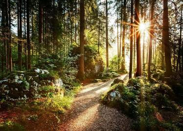

Secrets of the Ancient Canopy

Forest ecosystems cover nearly thirty percent of the Earth's land surface, serving as vital lungs for our planet. Beneath the dense canopy of ancient woodlands lies a complex network of plant life, fungi, and wildlife that have coexisted for millions of years. Tall redwoods and towering oaks absorb carbon dioxide while replenishing the atmosphere with clean oxygen, sustaining thousands of unique plant species and animal habitats.
Deep within temperate rainforests, trees communicate across vast distances through underground fungal networks often referred to as the mycorrhizal network. This biological web allows mother trees to share vital nutrients, water, and biochemical warnings with neighboring saplings. Preserving these ancient woodland biomes remains essential to preserving biodiversity, protecting freshwater streams, and regulating global climate patterns for generations to come.